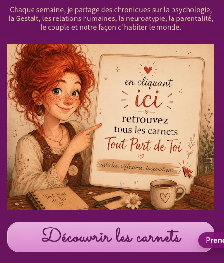
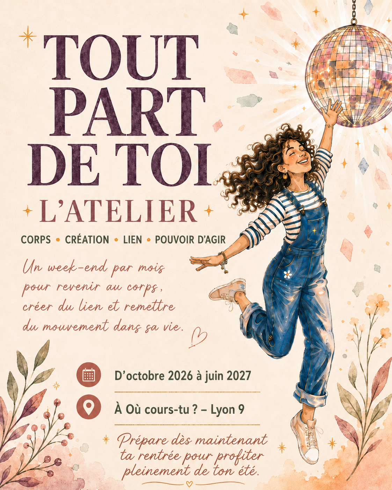
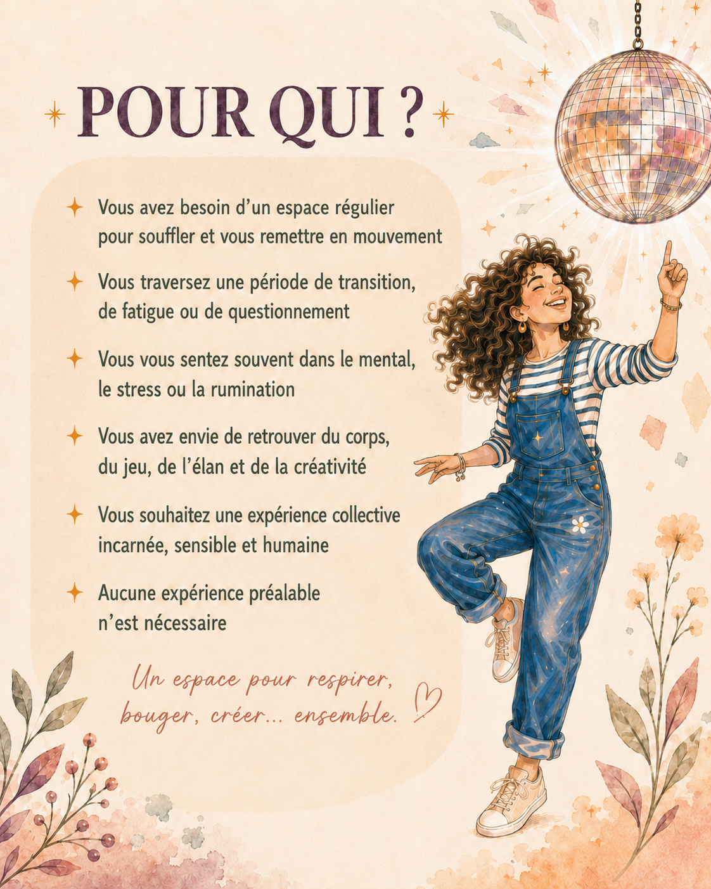
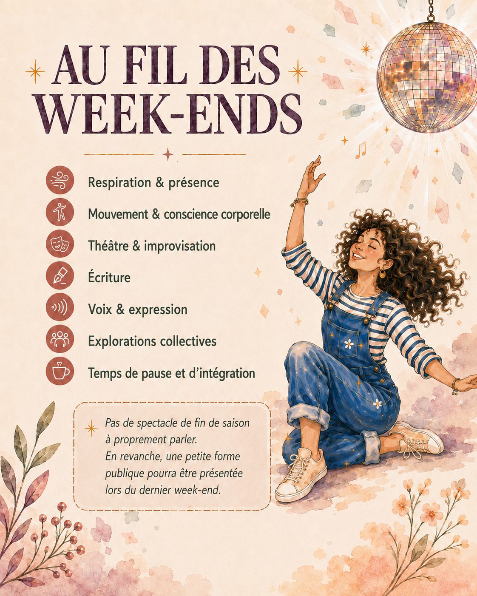
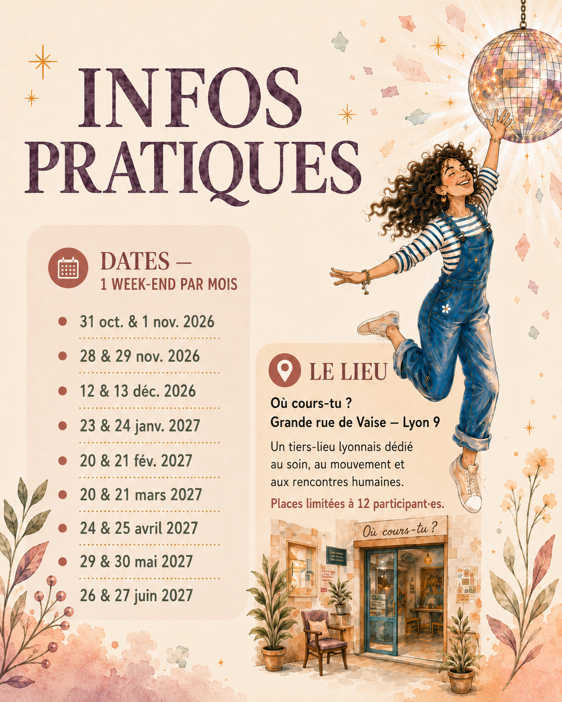
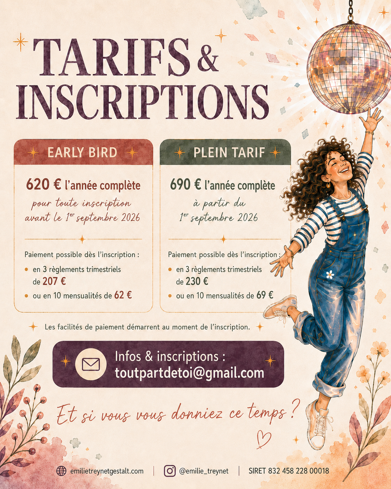

Bonjour à toutes et tous,
Cela fait longtemps que je ne vous ai pas écrit.
Il faut dire que les canicules successives m’ont pris de l’énergie. Beaucoup d’énergie.
J’espère que, là où vous êtes, tout va pour le mieux et que vous parvenez à trouver un peu de fraîcheur, du repos, des espaces où respirer.
Je sais aussi que cette chaleur, et les incendies qui ont touché de nombreux endroits du territoire, ont bouleversé beaucoup de personnes.
Il y a ce que l’on voit.
Ce que l’on imagine.
Ce que l’on ressent, parfois de loin, et qui nous atteint quand même.
Pour le moment, peut-être commencer par sentir.
Sentir ce que cette chaleur produit dans notre corps.
Et puis sentir aussi ce que provoquent les images des incendies, même lorsqu’ils sont loin de nous.
Est-ce que cela serre quelque part ? Est-ce que cela coupe le souffle ? Est-ce que cela crée de la tristesse, de la peur, de la colère, de l’impuissance ? Est-ce que notre énergie baisse ? Est-ce que nous nous sentons au contraire très activé·es ?
Avant de chercher tout de suite quoi penser ou quoi faire, il peut être précieux de repérer ce qui se passe déjà en nous.
Parce que ce que nous vivons ne passe pas seulement par la pensée. Le corps reçoit lui aussi les événements, les températures, les images, les inquiétudes.
Mettre un peu de conscience sur nos sensations permet de ne pas rester seulement dans une sidération diffuse. Cela aide à distinguer ce qui nous traverse, à retrouver des appuis, et parfois à laisser apparaître plus clairement ce dont nous avons besoin : nous protéger, ralentir, parler à quelqu’un, bouger, nous reposer, agir…
La nature, elle, reprend toujours ses droits.
Toujours.
L’été : la saison du plein contact… vraiment ?
En Gestalt, on aime penser les saisons comme des mouvements.
L’été est normalement la saison du plein contact.
On sort. On rencontre. On voyage. On se baigne. On marche davantage. On mange dehors. On laisse les corps reprendre un peu de place.
Il y a quelque chose de l’expansion, de l’ouverture, de l’élan vers le monde.
Mais cette année, quelque chose est presque inversé.
Les chaleurs intenses nous invitent à fermer les volets, rester à l’intérieur, ralentir, nous protéger, parfois même nous cloîtrer.
C’est presque tout l’inverse de l’énergie habituelle de la saison.
Est-ce qu’il ne risque pas de nous manquer quelque chose dans le cycle du contact ?
Peut-être que la question n’est pas de forcer l’été à ressembler à l’été.
Peut-être qu’il s’agit plutôt de se demander :
Comment puis-je rester en contact avec moi, avec le vivant et avec les autres, sans me mettre à mal ?
Deux petites pratiques, toutes simples
Faire entrer le dehors à l’intérieur
Choisissez un moment où la température est encore supportable : tôt le matin ou plus tard le soir.
Ouvrez une fenêtre. Asseyez-vous quelques instants. Et pendant trois minutes seulement, ne faites rien.
Sentez l’air sur votre peau. Écoutez les sons dehors. Regardez la lumière. Repérez une odeur, une couleur, un mouvement.
Puis demandez-vous simplement :
« Qu’est-ce qui me met en contact, là, maintenant ? »
Pas besoin d’une grande réponse. Une sensation suffit.
Laisser le corps choisir son mouvement
Mettez une musique que vous aimez.
Pas pour faire du sport. Pas pour bien danser. Pas pour reproduire un mouvement.
Commencez simplement par sentir ce qui se passe dans votre corps en écoutant la musique.
Peut-être qu’un pied commence à battre le rythme. Que vos épaules ont envie de bouger. Que votre bassin se balance légèrement. Que vous avez envie de vous étirer, de lever les bras, de fermer les yeux.
Suivez ce premier petit mouvement.
Puis voyez s’il en appelle un autre.
Il ne s’agit pas de demander au corps de faire quelque chose, mais de repérer ce qu’il a spontanément envie de faire et de lui laisser un peu de place.
Deux ou trois minutes suffisent. Vous pouvez même rester assis·e.
Et à la fin, simplement observer :
Est-ce que quelque chose a changé dans ma respiration, mon énergie, mon humeur ou ma sensation d’être là ?
Le contact n’est pas forcément spectaculaire.
Parfois, il tient dans un souffle, un regard, une sensation de peau ou un mouvement minuscule.
Et si vous aviez envie de rester au contact de vous autrement cet été…
Vous pouvez aussi aller faire un tour sur mon site pour (re)lire les Carnets de l’année.
J’y partage régulièrement des chroniques autour de la psychologie, de la Gestalt, des relations humaines, de la neuroatypie, de la parentalité, du couple, mais aussi de ces petits endroits de la vie où quelque chose se joue, se répète, résiste, se transforme ou nous remet en mouvement.
Il y en a pour tous les goûts, toutes les sensibilités et tous les moments de vie.
Des textes pour réfléchir.
D’autres pour se reconnaître.
D’autres encore pour déplacer légèrement le regard ou simplement laisser infuser une question.
Peut-être que l’un de ces carnets fera écho à ce que vous traversez aujourd’hui.

Vous pouvez les retrouver depuis mon site :
Puis vous laisser guider vers Les Carnets, tout en bas du site.
Le cabinet ferme jusqu’au 24 août inclus
Le cabinet sera fermé jusqu’au 24 août inclus.
Je vous retrouverai donc à partir du 25 août, avec plaisir, pour les accompagnements individuels et de couple.
Les rendez-vous peuvent déjà être réservés en ligne :
Tout part de toi — L’atelier
Je suis très heureuse de vous présenter un projet auquel je pense depuis longtemps : un week-end par mois, d’octobre 2026 à juin 2027, chez Où cours-tu ? à Lyon 9.
L’idée ? Créer un espace régulier pour ralentir, respirer, bouger, créer, explorer et surtout revenir à soi au milieu des autres.
Au fil des mois, nous traverserons différentes propositions autour du corps, du souffle, du mouvement, du théâtre et de l’improvisation, de l’écriture, de la voix, de la présence et du lien.
Ici, il n’y a pas de recherche de performance.
On vient expérimenter. Ressentir. Jouer. Créer. Reprendre confiance. Retrouver de l’élan. Et remettre un peu de vivant dans son quotidien.
Aucune expérience artistique, corporelle ou théâtrale préalable n’est nécessaire.
Le corps est au centre.
La création aussi.
Et surtout : l’expérience humaine.

Peut-être que cet atelier est pour vous si…
- vous avez besoin d’un espace régulier pour souffler et vous remettre en mouvement
- vous traversez une période de transition, de fatigue ou de questionnement
- vous vous sentez souvent très dans le mental, le stress ou la rumination
- vous avez envie de retrouver du corps, du jeu, de l’élan et de la créativité
- vous souhaitez vivre une expérience collective incarnée, sensible et humaine

Au fil des week-ends
Nous explorerons notamment la respiration et la présence, le mouvement et la conscience corporelle, le théâtre et l’improvisation, l’écriture, la voix et l’expression, les explorations collectives ainsi que des temps de pause et d’intégration.
Il n’y aura pas de spectacle de fin de saison à proprement parler. En revanche, une petite forme publique pourra être présentée lors du dernier week-end, pour celles et ceux qui souhaiteront vivre aussi cette expérience.

Infos pratiques
Le parcours se déroulera à raison d’un week-end par mois, d’octobre 2026 à juin 2027, à Où cours-tu ? — Lyon 9.
Le groupe sera volontairement limité à 12 participant·es, afin de préserver la qualité des échanges et de l’expérience collective.

Tarifs & inscriptions
Le tarif Early Bird reste donc à 620 € l’année complète jusqu’au 30 septembre. Le plein tarif de 690 € s’appliquera à partir du 1er octobre 2026.
Des facilités de paiement sont possibles dès l’inscription, en 3 règlements trimestriels ou en 10 mensualités.

Le visuel conserve la date initiale de l’offre. Pour cette newsletter, l’Early Bird est bien prolongé jusqu’au 30 septembre 2026 inclus.
Vous êtes intéressé·e ?
Vous pouvez simplement m’écrire pour obtenir davantage d’informations, poser vos questions ou vous inscrire.
Il n’est pas nécessaire d’être déjà certain·e de vouloir vous engager pour me contacter. Nous pouvons simplement échanger et voir si cet espace peut vous convenir.
Et si vous vous donniez ce temps ?
Un temps pour respirer.
Bouger. Créer. Rencontrer. Partager.
Et remettre un peu de vivant là où quelque chose s’était peut-être figé.
Je vous souhaite une fin d’été aussi douce que possible,
et me réjouis de vous retrouver très bientôt.